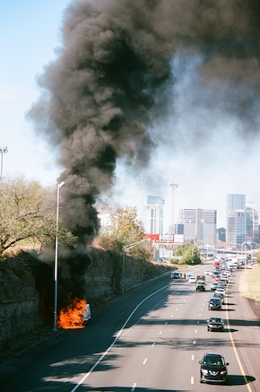

Traveling in the Post-Pandemic World
Home
Travel Basics
Travel Tips
Packing for Travel
Travel Itinerary
Creative Travel
Travel tips for the novice and experienced traveler
What are our common or shared experiences of travel? What are the best and worst experiences?
The excitement, joy, and wonderment that travel induces can change in an instant.
Mouse over the picture and then read the articles linked below for Travel Horror Stories and ways to overcome obstacles on your journey.
Hint: Travel can be exciting - in many different ways!

Resources for travel obstacles and how to avoid them.
Travel Stories that Will Keep You up at Night on Reddit
Our favorite travel stories from Frommers
How to overcome travel disasters from Refinery 29